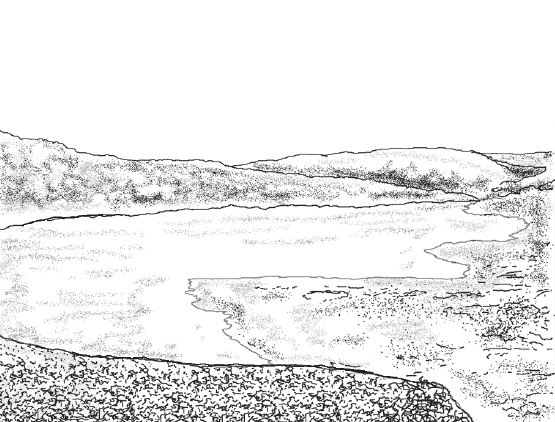

«Внутреннее море» Африки и Великий Нил.

Озеро Виктория — второе в мире по величине пресное озеро после Верхнего озера и самое большое озеро в Африке. Оно настолько велико, что в течение долгих лет до европейцев доходили слухи о загадочном «внутреннем море», плещущемся в глубине Африканского континента. В 1858 г. к озеру с юга подошел английский путешественник Джон Хеннинг Спик и увидел безграничную водную даль. Местные жители поведали, что озеро называется «Ньянца», что в переводе с языка банту означает «Большая вода». Таким образом, Спик назвал озеро Виктория-Ньянца, прославив имя правившей в то время английской королевы.
Расположено озеро Виктория в Восточной Африке на территории трех государств: Танзании, Кении и Уганды. Северное его побережье пересекает экватор.
Озеро лежит на пути Восточно-Африканской зоны разломов — одного из величайших геологических явлений на Земле. В частности, Восточный разлом начинается от самого озера и тянется на север почти на 2500 км, из Танзании через Кению в Эфиопию, к участку, известному под названием Афарский Треугольник, представляющему собой область вулканических пород и частых землетрясений. В настоящее время в районе озера Виктория вулканическая активность проявляется с западной стороны — в горах Вирунга в Юго-Западной Уганде, и в Северной Танзании — к востоку. В Танзании находится Ленгаи, единственный действующий карбонатитный вулкан, чья лава подобна вулканическому известняку, приобретающему через 24 часа после извержения цвет талого снега.
Другая важная черта Африканского разлома — прерывистая линия озер, пролегающих по дну долины. Три самых больших озера Африки — Викторию, Танганьику, Ньясу — называют великими африканскими озерами. Площадь озера Виктория составляет более 68 тыс. кв. км, что равняется территории двух европейских стран — Бельгии и Нидерландов, вместе взятых. Средняя глубина — около 40 м, максимальная — 80 м. В отличие от глубоководных соседей — Танганьики и Ньясы, которые лежат в пределах системы разломов, — озеро Виктория заполняет мелкую впадину между восточной и западной сторонами рифтовой долины. Водоем получает огромное количество осадков во время сезонных дождей, что превышает объем воды, доставляемой всеми его притоками. Форма озера Виктория близка к четырехугольной, но берега сильно изрезаны, образуя многочисленные выступы и заливы. Общая длина береговой линии превышает 7 тыс. км. Некоторые географы в шутку сравнивают очертания Африканского материка с головой лошади, пьющей воду из Индийского океана, а озеро Виктория соответствует голубому глазу этой головы.

Озеро Виктория
В географическом отношении озеро Виктория лежит на высоте 1134 м над уровнем моря в прогибе древних кристаллических пород Восточно-Африканской платформы в окружении плоских или слабо всхолмленных равнин. Поверхность их большей частью очень полого понижается к озеру и плавно уходит под воду. Поэтому берега Виктории преимущественно низкие и плоские, часто заболоченные. Высокие обрывистые берега характерны, главным образом, для западного и восточного побережий.
В водах озера водится огромное количество крокодилов, а также здесь до сих пор живет рыба ланг, жившая здесь 300 млн. лет назад. Она может вдыхать и задерживать воздух в жабрах, как в легких. Эта редчайшая рыба является связующим звеном между обычными рыбами и наземными животными. На территории озера находятся знаменитые заповедники и Национальные парки. Наиболее интересен Национальный парк острова Рубондо, на территории которого посетителям запрещено перемещаться на машинах в целях сохранения первозданной окружающей среды. Невероятное богатство фауны позволяет во время пеших прогулок увидеть животных с очень близкого расстояния.
На хорошо увлажненных северных и южных берегах простираются папирусовые болота и отдельные участки густых экваториальных лесов; встречаются также поля хлопчатника, банановые рощи, плантации кофейного дерева. На юге и на востоке, где климат засушлив, преобладают саванны, поросшие канделябровидными гигантскими молочаями. Они, подобно кактусам, относятся к суккулентам и способны хорошо переносить засуху, накапливая влагу в толстых стеблях со специфической водоносной тканью.
У самых берегов озера произрастают 15-метровые экземпляры кегели эфиопской, называемой также «колбасным деревом» из-за необычных плодов, действительно напоминающих батоны докторской колбасы. Эти невероятные плоды диаметром 10 см имеют длину около полуметра и весят 5–8 кг. Буроватые в зрелом состоянии, они беспорядочно свешиваются вниз на длинных одеревенелых «шпагатах» плодоножек, таких крепких, что на них можно раскачиваться как на качелях. Несмотря на аппетитный вид, деревянные «колбаски» совершенно непригодны для еды, а разрубить их под силу разве что топору дровосека. Диковинные плоды могут висеть на дереве месяцами, медленно увеличиваясь в размере и вызревая до нужной кондиции. Иногда их поедают жирафы и гиппопотамы. Раскидистая крона кегели дает густую тень всем живым существам.
На озере, как на море, бывают приливы и отливы, причем местные жители объясняют это весьма своеобразно. По их мнению, в озере очень много бегемотов, и утром, когда эти массивные животные решают принять ванну, вода выходит из берегов, а вечером, когда купание сменяется пастьбой, уровень воды опять становится низким.
Озеро Виктория играет большую роль в водном режиме Нила, равномерно пополняясь водой в течение всего года за счет постоянных дождей и таким образом стабилизируя реку. Кроме того, это крупное озеро обладает большими возможностями для судоходства: широкая водная гладь, много защищенных заливов и бухт. Но следует учитывать серьезные природные помехи: во время ураганов на озере поднимаются сильнейшие штормы с громадными волнами, которые угрожают даже большим судам.
Нередко пишут, что Нил вытекает из озера Виктория. Однако настоящим истоком великой реки Египта считают речку Катера, которая впадает в озеро Виктория. А в северной части озера есть небольшой залив Наполеона, из которого на север течет река, называемая Виктория-Нил. Впервые это было доподлинно установлено английской экспедицией Д. Спика в 1862 г. Гигантская река начинает свой путь, в ходе которого приобретает разные имена и меняет свои облики. Нил может быть разлившимся от горизонта до горизонта в Южном Судане, болотистым, заросшим папирусом и тростником. Может быть чистым и величественным у Хартума, яростным и клокочущим у водопада Мерчисон и ручным, спокойным в Каире.
По преданию, древнегреческий историк Геродот сказал так: «Египет — дар Нила». Действительно, вся жизнь этой страны сосредоточена на берегах великой реки и в его дельте. Но Нил всегда злоупотреблял своим правом кормильца и поильца целой страны. Он отличался нравом жестоким и коварным. Воды его иногда разливались с такой силой, что сносили в море растения, выращенные феллахами. А иногда река вдруг оскудевала, наступала засуха, также губившая все, чего люди добивались ценой неимоверных усилий. Древние египтяне молились Нилу и задабривали его, принося даже человеческие жертвы.
Позднее на реке стали сооружать различные системы орошения, плотины и водохранилища, чтобы удержать воду. Одним из грандиозных сооружений стала Асуанская плотина, построенная в середине XX века. В 1964 г. на Ниле был необыкновенно большой паводок, и плотина сдержала напор воды, спася страну от наводнения. В 1965 и 1966 гг. паводки, наоборот, были незначительными, но ожидаемая засуха была предотвращена благодаря тому, что накопленная в водохранилище вода была пущена на поля.
В своем истоке Нил кажется диким и неукротимым, т. к. в верхнем течении река Виктория-Нил порожистая, а в истоке у самого озера Кьога низвергается небольшим водопадом. Немного ниже она изменяет направление и несет свои воды в озеро Мобуту-Сесе-Соко (бывшее озеро Альберт), чтобы превратиться в гигантский водопад Мерчисон. Приближаясь к месту падения воды, река сужается до 6 м и здесь набирает скорость, прыгая с уступа на уступ, обрушиваясь в конечном итоге с 50-метрового трамплина в теснину. В каменной чаше водяной вал с громом дробится и пенится, выбрасывая в воздух водяную пыль и порождая неправдоподобно яркие ленты радуги. О мокрые скалы бьются размытые корни мертвых деревьев, и трепещет в бегущем водяном потоке зеленая борода мха.
Из озера Мобуту-Сесе-Соко вытекает Альберт-Нил. В верхнем течении река спокойна, а от города Нимуле порожиста. Наиболее значительны пороги Фола, где река прорывается через ущелье шириной 20 м. Именно здесь заканчивается озерная область Нильского бассейна. Нил прощается с Восточно-Африканским плоскогорьем и вытекает на равнины Судана. Севернее порогов река носит название Бахр-эль-Джебель и распадается на множество рукавов, образуя «страну рек». Поверхность этой территории ровная, поэтому все водные артерии имеют небольшое падение и медленное течение.
В водоемах с полу стоячей водой бурно развивается растительность, образуя на поверхности целые острова. Они называются «сэдды», что в переводе с арабского — «барьеры» или «препятствия». И это не случайно. Иногда сэдды наглухо перекрывают русло реки, препятствуя судоходству. Огромную роль в формировании таких плавучих островков играют растения под названием эйхорния толсточерешковая, или водный гиацинт. Плотные блестящие ярко-зеленые листья эйхорнии имеют необычную ложкообразную форму, собраны в розетку и сидят на стебле длиной около 1 м. Основания их необыкновенных черешков сильно вздуты и наполнены воздухом. Именно они и поддерживают все растение на плаву, словно надувные спасательные жилеты.
Массовое цветение водных гиацинтов — необыкновенно красивое зрелище; кажется, что на водоем опустилось голубовато-фиолетовое облако. Великолепные цветы держатся всего один день, а затем цветонос уходит под воду. Примечательно, что этот вид способен увеличивать свою численность с невероятной быстротой за счет вегетативного размножения, которое является наиболее действенным в условиях постоянного тепла и влаги. Скорость самовоспроизводства потрясает: за 3–4 месяца каждый кустик может дать 200 новых розеток. Нередко на плавучих островках из эйхорнии путешествуют молодые кайманы, расселяясь таким образом на большие расстояния.
Водный гиацинт
После впадения в Нил реки Собат он называется Белым Нилом. Собат течет с Эфиопского нагорья и получает много воды за счет дождей, выпадающих в горах в июне-сентябре. С гор потоки воды несут много ила, а потому имеют кремово-белый оттенок. Эта белесая вода во время половодья вливается в Нил, окрашивая его воды. Вот почему и возникло странное название Белый Нил, хотя в другое время года вода в реке имеет зеленовато-серый цвет. Ниже впадения реки Собат Белый Нил течет в неглубокой долине, не принимая постоянных притоков. В связи с небольшим уклоном местности течение реки медленное. По берегам расстилаются саванны, где пасутся стада антилоп, кормятся страусы, иногда раздается рев бегемотов и львов. У Хартума Белый Нил сливается с Голубым Нилом, образуя основное течение реки.
Голубой Нил начинается на Эфиопском нагорье на высоте 2700 м над уровнем моря небольшой рекой под названием Малый Аббай, вытекающей из озера Тана. Примерно в 20 км от озера Аббай низвергается 45-метровым водопадом, и далее река уже называется Голубым Нилом. На протяжении 500 км Голубой Нил течет в ущелье глубиной 900–1200 м. Если посмотреть сверху со скал, то река на дне кажется узенькой струйкой воды. В глубоком ущелье холодно и по утрам стелется светло-голубой туман, дающий название реке. От Хартума до Асуана Нил перегораживают шесть порогов, первые два из которых были затоплены после строительства Асуанской плотины.
По Египту Нил течет между Аравийской и Ливийской пустынями, не получая ни притоков, ни влаги от дождей, т. к. они в этой местности очень редки. Нильская вода сильно испаряется, также много ее расходуется на орошение полей. Кажется, что природа сыграла с египтянами злую шутку. Из 1 млн. кв. км территории этой страны обрабатывать можно только узкую полоску земли на берегах Нила. Здесь на 1 кв. км приходится около 1000 человек, что в 2–3 раза выше, чем в густонаселенных европейских странах.
От Каира начинается Нильская дельта, треугольник которой имеет высоту (расстояние с севера на юг) около 160 км и основание (расстояние между Порт-Саидом и Александрией) около 250 км. Таким образом, площадь дельты составляет 22 тыс. кв. км. В дельте образовались озера (отчлененные от моря лагуны), самое большое из которых — Манзала. Дельту Нила образуют два его главных рукава: западный и восточный, каждый длиной более 200 км. В устья этих рукавов выносится каждый год много твердого материала, который отлагается в дельте, и она все больше выдвигается в море. Эта область имеет весьма разнообразную флору и фауну, включая редкие и исчезающие виды. Особенно многочисленным является мир пернатых, среди которых немало перелетных птиц, живущих в умеренном климате и преодолевших тяжелый многокилометровый путь на юг. Бесчисленными стаями плавают дикие утки, а в небе носятся сотни морских ласточек и чаек, за которыми следят острым взором хищники — орлы-могильщики, белохвостые орланы и ястребы. На поверхности озер живой гатью лежат белоснежные пеликаны, огненные фламинго, стаи пестрых чибисов. Большие группы лебедей, как цветы гигантских лотосов, затаились в тени плесов, а возле них бродят на мелководье цапли и выпи. В кустах и густой траве беспрерывно снуют и перекликаются мухоловки, пеночки, жаворонки, горихвостки, зяблики и десятки других северных певцов, зимующих в этих теплых краях, где властвует великий и могучий Нил.